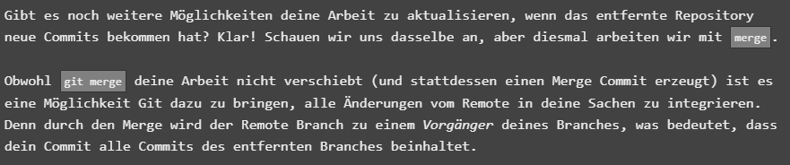
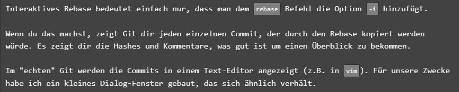
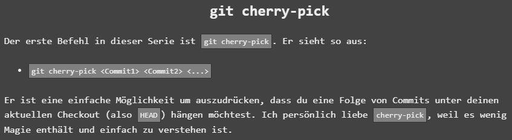

git fetch
Mit git fetch holt man Daten von einem entfernten Repo / synchronisiert lokale Abbildung
Funktionsweise:
Fetch lädt Commits runter (die lokal fehlen)
Remote Branches werden aktualisiert (o/main)
Zusammenhang Remote Branches und git fetch:
Remote Branches: Zustand seit ich das letzte Mal das Repo angesprochen habe
git fetch: Methode um Repo anzusprechen
Kommuniziert übers Internet (http:// oder git://)
Wichtig: es ändert nichts an den lokalen Branches --> nur ein Download Schritt am Ende vom Tag
git commit
Zum speichern einer "Abbildung" aller Daten
git merge
Um Branches zusammenzuführe --> man schiebt quasi ein Commit auf den anderen
Funktionsweise:
Dabei wird automatisch ein commit erstellt welcher zwei Vorgänge hat
git rebase
Zweite Option um Branches zu kombinieren
Nimmt Commits und kopiert sie
Vorteil: Hübsche lineare Abfolge von commits --> merge commits werden vermieden
git cherry-picking
Zum verschieben von Inhalten
Git cherry-pick --> git cherry-pick Commit1 Commit2 ...
Damit drücke ich aus, dass ich eine Folge von Commits unter den aktuellen Checkout (Head) hängen will (würde auch mit rebase gehen)
Interaktive Rebase
Interaktive Rebase --> wenn ich die commits nicht genau kenne --> um sich die Serie von Commits in einem rebase genauer anzusehen
Dem rebase Befehl die option –i hinzufügen
Dadurch zeigt mir git jeden commit der durch den rebase kopiert werden würde --> wird im Texteditor angezeigt
Kann drei Dinge tun --> Reihenfolge der Commits ändern / ignorieren mit omit, wiederaufnehmen mit pick / Commit zusammenfassen (squah)